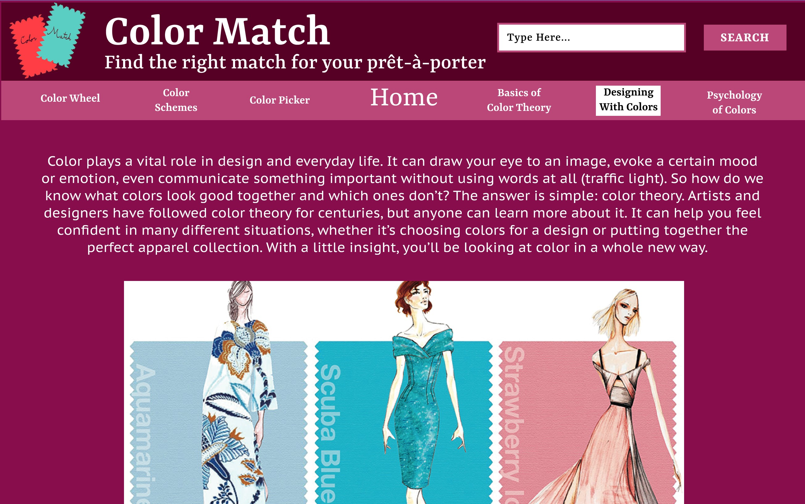
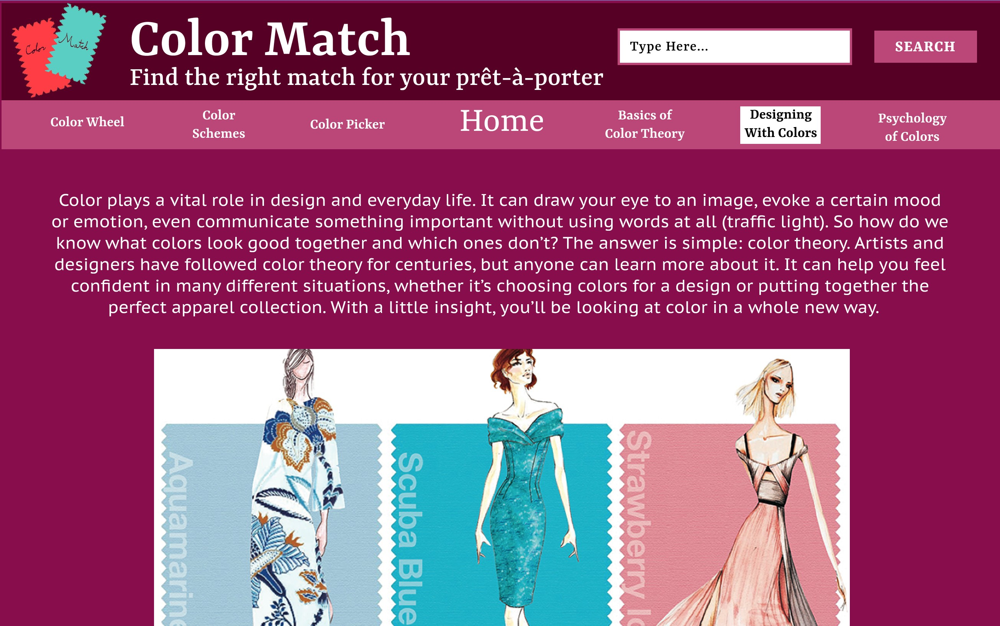
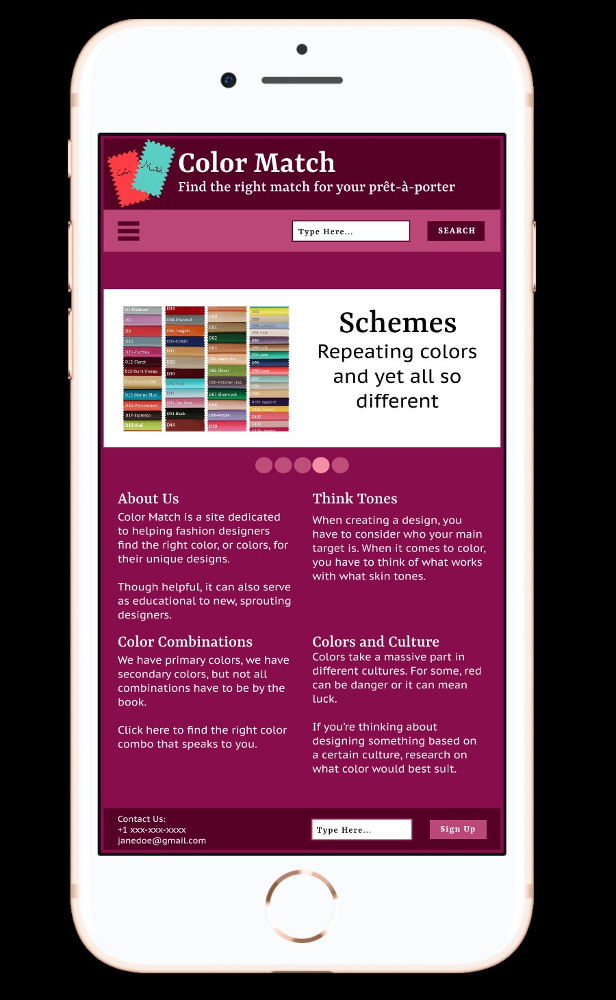
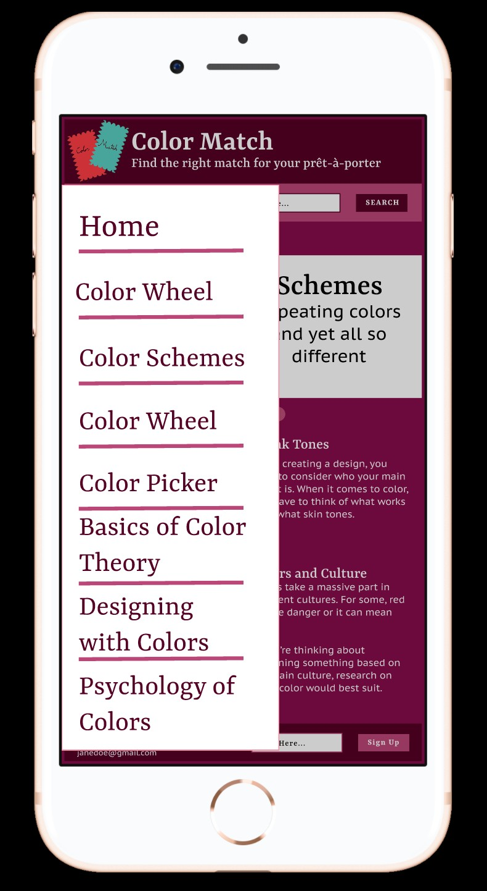

The following was a project where I had to design a website based off on the color theory and the different color categories that were presented to me. This website had to be built for certain artists and/or designers in any field of your choice. I personally chose to dedicate my website towards fashion designers. To be more specific, beginner fashion designers that may need some help with their choice in color(s).
 
Not only that, but I later had to convert my website to one that would function on a phone. To make navigation easier, I added the side menu (also known as the hamburger icon).